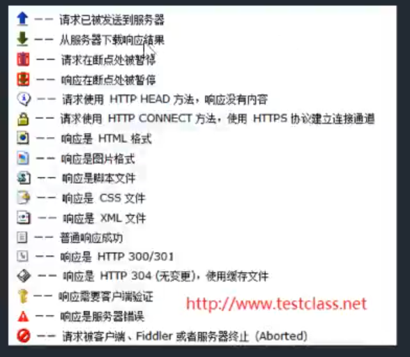

抓包介绍
11.什么是抓包2抓包（packet capture）就是将网络传输发送与接收的数据包进行截获、重发、编辑、转存等操作，也用来检查网络安全。抓包也经常被用来进行数据截取等
抓包的原理和主流工具
x11.抓包的原理2代理就是在客户端和服务器之间设置一道关卡，客户端先将请求数据发送出去后，代理服务器会将数据包进行拦截，代理服务器再冒充客户端发送数据到服务器；同理，服务器将响应数据返回，代理服务器也会将数据拦截，再返回给客户端。342.主流工具5名称 支持平台 优缺点6wireshark linux、windows linux平台支持好,功能强大 不能解析https的内容7fidder windows功能 功能强大，支持修改报文 仅支持windows8Charles window、Mac 可以按照域名进行分层级查看 需要收费9Burp Suite 支持java的平台 黑客喜欢用的功能强大工具 界面不是很好看
Fiddler基本功能简介
x11.Fiddler是什么?2Fiddler是强大的抓包工具，它的原理是以web代理服务器的形式进行工作的32.有什么功能?4它能记录所有客户端和服务器的http和https请求5允许你监视6设置断点7甚至修改输入、输出数据8910
火狐浏览器设置
x1要抓火狐浏览器发送的包需要进行设置:21.打开Fiddler,选择工具->选项->connections->点击(Copy Browsr Proxy Configuration URL)32.打开火狐浏览器,点击右上角三横->选项->常规->网络设置->设置...->自动代理配置的 URL（PAC）->把刚才复制的url粘贴上去43.重启浏览器和Fiddler
Fiddler抓包设置
x1一.HTTP代理请求21、 启动代理 ：点击窗口左下角，显示 “Capuring” 侧说明当前处于代理状态。(在抓包)32、通过浏览器访问相关网页或执行页面操作（如，登录、搜索）。43、通过Fiddler查看代理的HTTP请求进行分析567二.分析请求数据81.请求统计92.会话详细(上半部分是请求,下半部分是回应)1011三.设置HTTP和HTTPS请求12HTTPS要证书,Fiddler有这证书13看讲义141.打开菜单栏：Tools –> Fiddler Options 打开fiddler配置。152.打开 HTTPS 配置项，勾选“Capture HTTPS CONNECTs”和“Decrypt HTTPS traffic”，然后点击“OK”。1617ctr+x,清空包

Fiddler主机过滤
x11.设置Action(如果不保存,重启后要再次设置,如果保存了,再次开启时,可也加载设置文件)2Run Filterset now 是否立即运行3Load Filterset 加载4Save Filterset 保存；562.保存设置和加载设置71.点击保存,存储设置文件82.重启,Fiddler时,点击加载,选择设置文件9103.主机过滤11Zone：指定只显示内网（Intranet）或互联网（Internet）的内容12目标主机:13-No Host Filter：无HOST过滤；(不过滤,所有的都用)14-Hide the following Hosts：隐藏下面的条件;15-Show only the following Hosts:只显示下面过滤条件;16-Flag the following Hosts：下面输入进行标记17输入框中输入18注意：输入多个HOST，多个之前用半角逗号或者回车分隔；19支持通配符：*.baidu.com；2021操作演示:(常用操作)221.选择互联网(Internet)232.选择只显示下面过滤条件(Show only the following Hosts)243.输入框中输入:*.baidu.com254.Save Filterset 保存；265.Action中的Run Filterset now 是否立即运行276.打开浏览器,进入百度和腾讯287.操作腾讯,发现没有左侧没有增加包,然后操作百度,发现增加了包2930314.客户端过滤:32Show only traffic from：可以指定只捕获哪个Windows进程中的请求；可以看左侧程序的编号33Show only Internet Explorer traffic：只显示IE发出的请求；(chrome的请求会被过滤)34Hide trafficfrom Service Host:隐藏来自service host（即由svchost.exe进程发出）的请求35svchost.exe是一个属于微软Windows操作系统的系统程序(了解)3637操作演示:381.打开谷歌浏览器,Fiddler,392.勾选Show only traffic from,左侧看进程名和端口号,然后右侧选择403.打开火狐浏览器,进入随便一个页面,发现Fiddler里没有抓火狐的包413.取消勾选Show only traffic from,在刷新火狐页面,发现有火狐的包4243
Fiddler请求过滤
xxxxxxxxxx301请求首页过滤配置:23Show only if URL contains：只显示URL中包含的字符串（字符串可以是URL中的一部分，多部分用空格分开，可以正则或完整的URL），例如REGEX:\.(js|css|js\?.*|css\?.*)$（隐藏所有js和css请求）；45Hide if URL contains：与Show only if URL contains相反，一个是显示，一个是隐藏；6演示:71.勾选Show only if URL contains82.看左侧的url,随便选择一个填上93.点击右上面的Actions104.发现左侧少了很多包111213Flags requests with headers：支持指定某个http请求头名称，如果在web session列表中存在该请求头，会加粗显示该session； 如:Host141516Delete requests headers：与Flags requests with headers类似，这里是如果包含该请求头，则删除该请求头；17演示:181.输入Host192.右上面的Actions,选择203.发现左边有加粗的包,点击一个214.选择会话详情,上部分拉到低,头部信息有Host222324Set request header：将HTTP请求头更新为所输入的值。25演示:261.勾选Set request header272.输入Host host283.刷新页面,发现很多错误294.因为我们改变了HTTP请求头30
Fiddler断点
xxxxxxxxxx441断点:程序运行或发送过程进行暂停,我们可以暂停发送,然后修改2可以在谷歌浏览器中的F12,Network->Name(选择下面的请求)->Headers可以看到详细信息3Break request on HTTP POST：给所有POST请求设置断点；4演示:51.选择Flters62.Hosts中选择Show only the following Hosts73.输入*qq.com84.勾选Break request on HTTP POST95.点击Action,选择Run Filterset now 是否立即运行106.进入qq邮箱注册,填入注册信息,点击发送短信验证码117.看左侧的包128.要继续,点击菜单工具下面的继续131415Break request on HTTP GET with QueryString：给所有带参数的GET请求设置断点；16学员演示1718Break response on Content-Type：给特定的Content-Type(内容的类型)设定断点19演示:201.选择Flters212.Hosts中选择Show only the following Hosts223.输入*qq.com234.勾选Break response on Content-Type,填入:text/json245.点击Action,选择Run Filterset now 是否立即运行256.刷新qq首页267.查看左侧的包278.要继续,点击菜单工具下面的继续2829Break on XMLHttpRequest:给xml请求设置断点3031演示断点改发送数据:321.在Filters中设置,332.Show only the following Hosts:只显示下面过滤条件;343.勾选Break request on HTTP GET with QueryString354.点击Action,选择Run Filterset now 是否立即运行365.最上面菜单-规则->自动断电->在请求前376.打开浏览器,进入百度首页,放行所有的断点387.在百度首页输入python,回车398.放行,看包中url有s?wd的包409.速度要快,改,双击击这个包4110.选择网格视图,找到name叫wd的,马上修改4211.然后放行断点,回到浏览器上,看到搜索框的文字变了4344
Code的过滤
xxxxxxxxxx141Hide success(2xx) 隐藏状态码在200至299的响应2Hide non-2xx 隐藏非200至299的响应3Hide Authentication demands(401,407) 隐藏状态码为401，407的响应。需要用户进一步确认证书的请求4Hide redirects(300,301,302,303,307) 隐藏状态码为300,301,302,303,307重定向的响应5Hide Not Modified(304) 隐藏状态码为304的响应。缓存实体有效返回30467演示:81.打开Fiddler,启动抓包92.打开浏览器,输入www.qq.com103.可以看到左侧有很多包114.勾选Hide success(2xx)125.选择Action,点击Run Filterset now 是否立即运行136.可以看到左侧的状态码200的,隐藏了14
响应类型和大小过滤
xxxxxxxxxx331Show all Content-Types 不过滤2Show only IMAGE/* 只显示Content-Type是图像类型的Session3Show only HTML 只显示Content-Type是HTML类型的Session4Show only TEXT/CSS 只显示Content-Type是text/css类型的Session5Show only SCRIPTS 只显示Content-Type是脚本类型的Session6Show only XML 只显示Content-Type是xml类型的Session7Show only JSON 只显示Content-Type是json类型的Session8Hide IMAGE/* 隐藏Content-Type是图片类型的Session9演示:101.打开qq首页,抓包112.选择Show only JSON123.选择Action,点击Run Filterset now 是否立即运行134.可以看到左侧少了很多包,留下的包的数据传输格式都的json145.选择一个包,双击,在会话详细的下部分的协议头可以看到Content-Type: text/json1516Time HeatMap 基于服务器返回响应时间给每个Session设置背景色。小于50ms绿色，50-300ms不着色，300-500ms黄色，大于500ms红色17演示:181.选择Show all Content-Types:不过滤192.勾选Time HeatMap203.刷新QQ首页,可以看到有些包的背景颜色有变化2122Hide smaller than 隐藏响应体小于指定字节数的响应23Hide larger than 隐藏响应体大于指定字节数的响应24Block script files 返回响应头Content-Type为脚本，将返回HTTP/404响应25Block image files 返回响应头Content-Type为图像，将返 回HTTP/404响应26Block SWF files 返回响应头Content-Type为flash，将返回HTTP/404响应27Block CSS files 返回响应头Content-Type为css，将返回HTTP/404响应28演示:291.勾选上Block image files302.刷新qq首页313.可以看到左侧很多包变为红色,4043233
响应头过滤
xxxxxxxxxx101Flag responses that set cookies 粗体显示响应头包含Set-Cookie的响应2演示:31.开启抓包,勾选Flag responses that set cookie42.登录qq邮箱,勾选下次自动登录53.可以看到有的包加粗了67Flag responses with headers 粗体显示指定HTTP响应头。同Flag requests with headers8Delete responses headers 删除特定的HTTP响应头。只是从响应头中删除，不删除Session9Set response header 创建更新响应头。同Set request header用法一样10
Fiddler的HTTP统计视图
xxxxxxxxxx11通过陈列出所有的HTTP通信量，Fiddler可以很容易的向您展示哪些文件生成了您当前请求的页面。使用Statistics(请求统计)页签最下面的(show chart)，用户可以通过选择多个会话来得来这几个会话的总的信息统计，比如多个请求和传输的字节数
QuickExec命令行的使用
xxxxxxxxxx91常见得命令有2help 打开官方的使用页面介绍，所有的命令都会列出来3cls 清屏 (Ctrl+x 也可以清屏)4@baidu.com --选择会话中域名包含 host 的会话(host的值中保护baidu.com)，此时按Enter键可高亮所有匹配的结果(协议头查看host的值)5?.png 用来选择png后缀的图片6?baidu ---URL中的字符，可为函数名，录入并执行enter后会高亮显示在会话窗口7>4000 ---选择Response Body(返回的数据) 值大于 4000 字节的 Sessions8=301/post/get --状态码/请求方式9
命令行设置断点
xxxxxxxxxx31只中断特点的会话2bpu www.baidu.com (这种方法只会中断www.baidu.com)3
设置IP地址显示
xxxxxxxxxx71在测试过程中，我们经常需要通过host在不同的环境之间切换，如何知道自己的环境是否切换成功，那么通过IP地址就很容易判断。2打开Fiddler, 菜单栏：Rules(规则)->Customize Rules…(自定义规则...)34通过快捷键 Ctrl+F ,搜索：static function Main() 函数。 在函数中添加一行代码，如下5FiddlerObject.UI.lvSessions.AddBoundColumn("ServerIP",120,"X-HostIP")67左侧最后面出现ServerIP列

会话比较功能
x1选中2个会话，右键然后点击Compare，就可以用WinDiff来比较两个会话的不同了 (当然需要你安装WinDiff)23把winDiff.exe的路径加入到path中,重启Fiddler,就可以